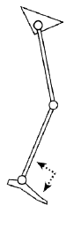

Antecedentes
Vídeos sobre la exploración
Gráficas de la exploración
Valoraciones
Longitud de miembros inferiores
Escala de movilidad funcional (distancia a caminar)
- 1 - Usa silla de ruedas, silla de paseo o cochecito: puede ponerse de pie para transferencias y puede dar algunos pasos aguantado por otra persona o usando un andador.
- 2 - Usa un andador u otra estructura de ayuda para la marcha: sin ayuda de otra persona.
- 3 - Usa dos muletas: sin ayuda de otra persona.
- 4 - Usa una muleta o dos bastones: sin ayuda de otra persona.
- 5 - Independiente en superficies llanas: no utiliza ayudas de marcha o necesita ayuda de otra persona. Si utiliza muebles, paredes, vallas o los bordes delanteros de las tiendas para sujetarse, haga el favor de escoger 4 como descripción adecuada.
- 6 - Independiente en todas las superficies: no utiliza ninguna ayuda de marcha o necesita ninguna ayuda de otra persona mientras camina, corre, asciende o sube escaleras.
- G - Gatea: el niño gatea para moverse en casa (5m).
- N.N - No aplicable. Por ejemplo, el niño no completa esa distancia (500 m).
Tono muscular - Escala Ashworth
| Escala de Ashworth | Izquierda | Derecha | |
|---|---|---|---|
| CADERA | Flexión | ||
| Inflexión | |||
| RODILLA | Flexión | ||
| Inflexión | |||
| TOBILLO | Flexión | ||
| Inflexión |
- 0 - Tono muscular normal.
- 1 - Discreto aumento del tono muscular que se manifiesta por un enganche o una resistencia mínima al final del movimiento cuando el miembro afectado es movilizado en flexión o extensión.
- 1+ - Discreto aumento del tono muscular, que se manifiesta por un enganche discreto seguido de una resistencia mínima durante al menos la mitad del resto del movimiento.
- 2 - Aumento más marcado del tono muscular a lo largo del movimiento, aunque permite una fácil movilización del miembro afectado.
- 3 - Aumento considerable del tono dificultando la movilización pasiva.
- 4 - El miembro afectado está fijado en extensiín o en flexión.
Análisis observacional de la marcha
Common gait patterns: Spastic Diplegia
| True equinus | Jump knee | Apparent equinus | Crouch gait |
 |
 |
 |  |
| > 90º Gastroc - - Hinged AFO |
> 90º Gastroc Hamstrings/RF (Psoas) Hinged AFO |
= 90º (Gastroc) Hamstrings/RF Psoas Solid AFO |
< 90º - Hamstrings/RF Psoas Grafo |